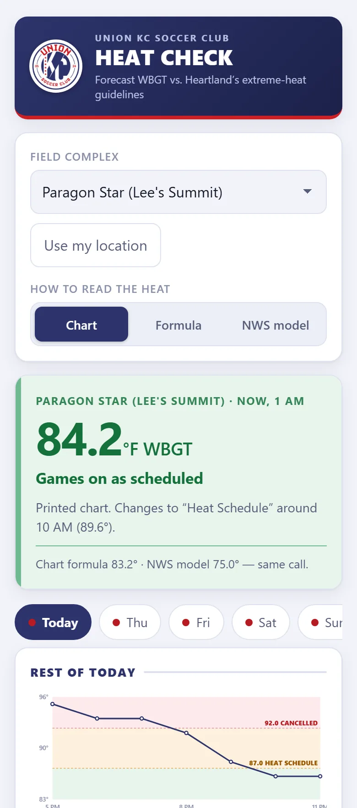
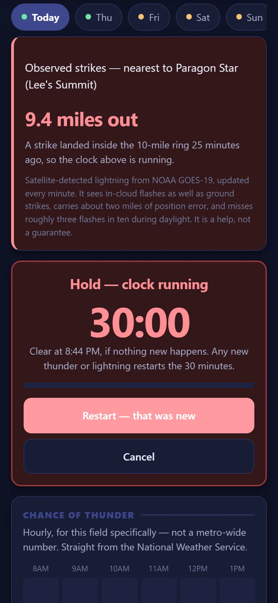
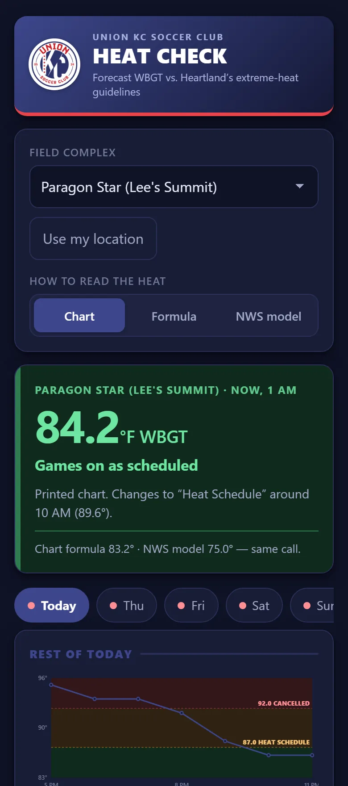
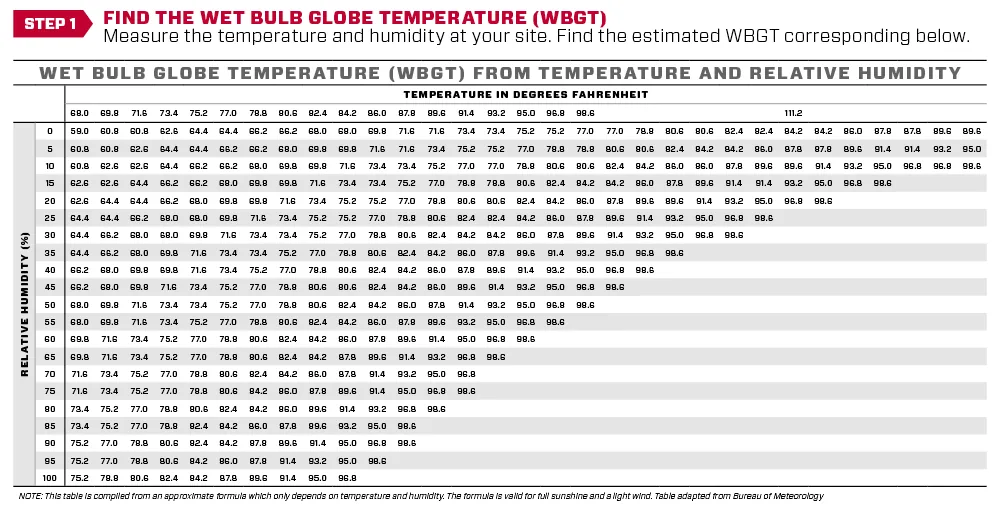
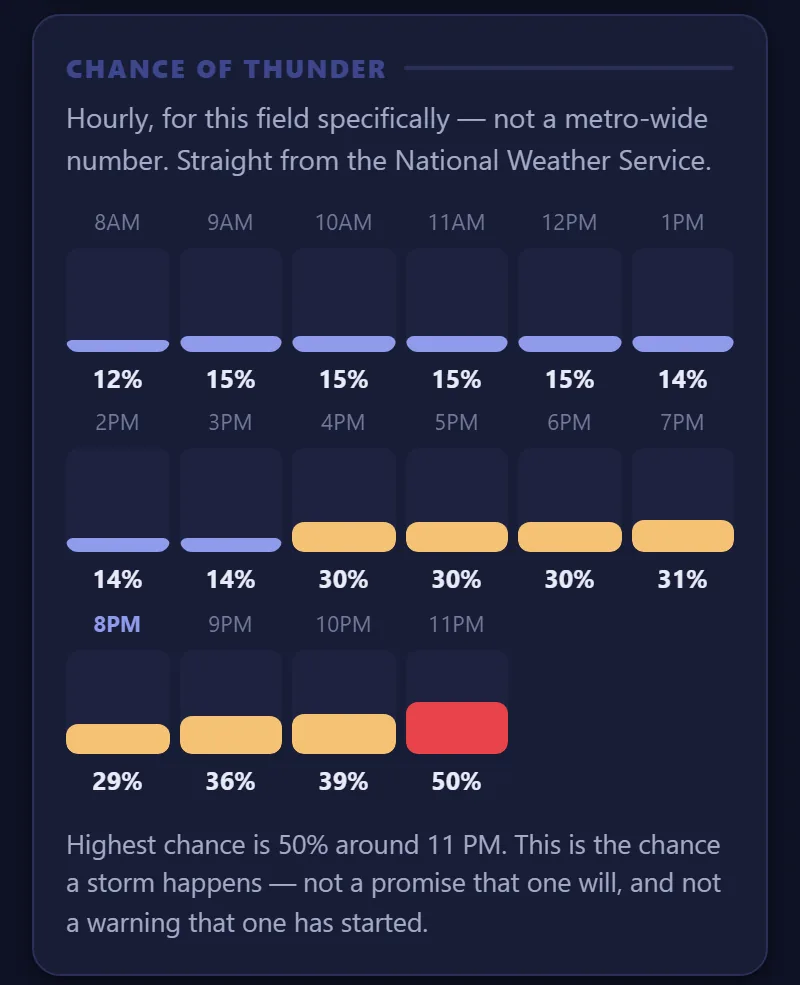
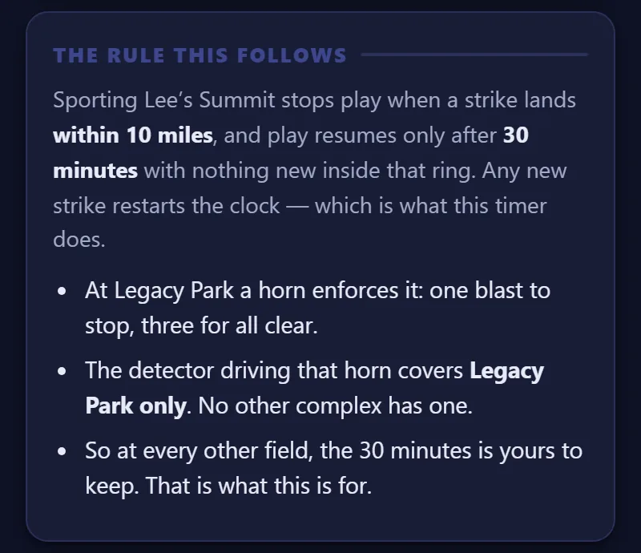

Is the game still on? Ask the satellite.
A friend's kid plays for Union KC Soccer Club. In summer, games get shortened or cancelled for heat. In storm season, one strike within 10 miles stops play for 30 minutes. He was checking a web page and a lightning map several times a week and guessing. So I built him an app.



The obvious answer was wrong
The request was "check the wet-bulb temperature." But Heartland Soccer, the regional league, doesn't cancel on wet bulb. It uses WBGT (wet-bulb globe temperature), which also counts sunshine and wind. On one test afternoon the two were 11 degrees apart and gave different answers. Wet bulb said "games on." The real rule said "heat schedule: shortened games and water breaks."
So the app shows WBGT hour by hour for each field complex, sorted into the league's three outcomes: games on, heat schedule, or cancelled.
Fun fact: that cancel line traces back to a 1984 medical paper on marathon runners.

A printed chart, turned into data
The league publishes a chart: find the temperature, find the humidity, read the box. I pulled all 432 boxes out of the PDF and checked every one against the formula behind it. They all agreed to within one degree.
Then the interesting part: how you round matters. The chart only has boxes every couple of degrees, so do you round to the nearest box, or down? Across one week's 13 playing hours, that choice flipped the verdict in 4 of them. The math slightly favoured rounding to the nearest box. But the person using it reads the chart by running a finger across and rounding down, so that's what the app does, because matching how the reader reads the chart beats matching the formula. The app also shows all three methods side by side, so nobody is surprised.
All clear. Waiting for weather.
Lightning: a clock that starts itself
The rule comes straight from Sporting Lee's Summit's published weather policy. A strike within 10 miles stops play. Play resumes after 30 minutes with nothing new inside that ring, and any new strike restarts the clock.
The app watches for strikes and starts the 30-minute clock by itself, timed from the strike, not from when you noticed. It survives a locked phone or a reload. Try the demo: a strike at 9.4 miles starts the clock, one at 13 doesn't.

Where the lightning data comes from
This was the hard part. The popular free lightning map explicitly forbids using its data for storm warnings. NOAA's strike data comes as huge science files with no simple way in, and the government map service that used to show lightning is gone.
So a small computer at my house does it. Every minute it pulls the latest data from GOES-19, a NOAA weather satellite that watches for lightning flashes, keeps anything near Kansas City, and publishes a tiny file the phone reads. I measured the satellite's delay at about 10 seconds. To save bandwidth, it checks the thunder forecast first and skips the download when storms are unlikely.
Under the hood
- Heat: hourly temperature, humidity, sun and wind from free weather APIs (Open-Meteo and the National Weather Service), turned into WBGT three ways: the printed chart, the formula behind it, and the NWS model.
- The whole app is one self-contained HTML file on GitHub Pages, with no account, no server of its own, and no API key. It installs to an iPhone home screen with the club crest as its icon. If the home server is down, it still gives the clock and the forecast.
- Colours sampled from the crest itself, pixel by pixel, not from the club's website, which uses a darker navy than the crest.
- 50 automated checks run the lightning logic against made-up storms: auto-start at 6 miles but not at 13, cancel versus a new strike, a stale feed, and so on.

It does not detect every strike, and it says so on screen. The satellite catches roughly seven flashes in ten during daylight, and positions can be about two miles off. Hearing thunder beats any device.
It was tested for real on 9 September, when a flash 9.4 miles from the Paragon Star fields started the clock exactly as designed. It's a help, not a guarantee, and the app is clearly labelled as unofficial and not affiliated with the club.
Could this work for you?
Plenty of businesses live and die by the weather: outdoor crews, event organisers, anyone who has to decide whether it's safe to send people out. The same trick works for all of them: free government weather data, narrowed down to the exact places that matter to you.